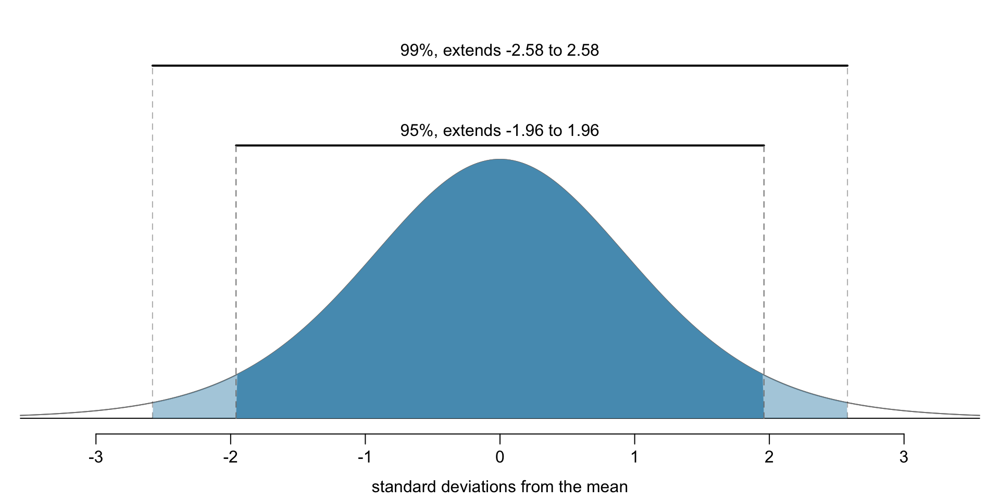
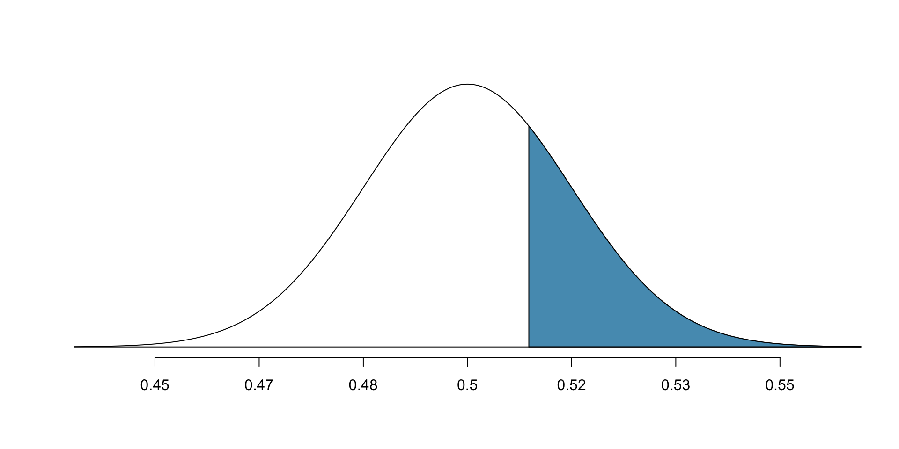

A more thorough treatment of inference for proportions
In this setting, for each observation there is only a single (categorical) variable taking one of two values measuring success or failure
e.g. “surgical complication” or “no complication”.
Since there’s only a single variable, we cannot do a randomization test.
We resort to bootstrapping and mathematical models.
Let’s return to the medical consultant example
A consultant tries to attract patients by saying that only 3 of her 62 clients (4.8%) had complications from surgeries; baseline US average complication rate is 10%.
Was not a randomized trial, so no way to assess whether her actions cause lower complication rate (she could have selectively chosen healthy patients).
However, we can assess whether the observed proportion \(\hat p = \frac{3}{62} \approx 0.048\) would occur due to random chance given population average of \(p_0 = 0.1\).
Can formulate this as a hypothesis test:
\(H_0\): no association between consultant contributions and complication rate; \(p=0.10\)
\(H_A\): patients with consultant associated with lower complication rate; \(p<0.10\)
We’ll estimate a “p-value”: if the null hypothesis is true, what is the probability of observing a test statistic \((\hat p)\) that is as extreme as the one we saw?
Sampling under the null hypothesis
What is the sampling distribution of the test statistic \(\hat p\) if \(H_0\) is true?
Dataset: 3 of 62 donors had complications.
Under \(H_0\), 10% of donors have complications.
Now we want to simulate additional datasets of size 62, where with probability 10%, the donor has a complication.
\(i\)th simulated dataset will produce a proportion \(\hat{p}_{sim}^{(i)} = \frac{\# \text{ complications}}{62}\)
Our estimated p-value is equal to this tail area: 0.122.
How do we do this binomial simulation in R?
Each bootstrap sample (size \(n=62\)) had its own proportion of succcesses\[\begin{align*}
\hat p_{sim}^{(i)} = \frac{\text{# complications in $i$th sample}}{n}.
\end{align*}\]
Each donor had a probability \(p\) of having a complication.
Then the \(\#\) of complications follows a binomial distribution with parameters \(n=62\) and \(p=0.1\). This is denoted as Binomial(n,p).
More generally, Binomial(n,p) models the number of successes in \(n\) independent trials when each trial has probability \(p\) of success.
To create the 10,000 bootstrap proportions, use: rbinom(10000, n, p)
This generates a vector of length 10000, where each component is the outcome of n where probability of success in each trial is p
To convert number of successes to proportion, need to divide by \(\#\) of trials
The sampling distribution for \(\hat{p}\) based on a sample of size \(n\) from a population with a true proportion \(p\) is nearly normal when:
The sample’s observations are independent, e.g., are from a simple random sample.
We expected to see at least 10 successes and 10 failures in the sample, i.e., \(np\geq10\) and \(n(1-p)\geq10.\) This is called the success-failure condition.
When both conditions are met, then the sampling distribution of \(\hat{p}\) is nearly normal with mean \(p\) and standard error of \(\hat{p}\) as \(SE(\hat{p}) = \sqrt{\frac{\ p(1-p)\ }{n}}.\)
Checking the two conditions
The independence condition is a more nuanced requirement (outside the scope of this class).
How do we check the success-failure condition when typically we don’t know the true proportion \(p\)? We can estimate \(p\) with either…
…the sample proportion \(\hat{p}\), if computing confidence intervals;
…the null value \(p_0\), if performing a hypothesis test.
Confidence interval
Provides a range of plausible values for proportion \(p\)
When the sample proportion \(\hat{p}\) can be modeled using a normal distribution, a confidence interval for proportion \(p\) takes the form \[\begin{align*}
\hat p \pm z^* \times SE(\hat{p})
\end{align*}\] where \[\begin{align*}
SE(\hat p) = \sqrt{\frac{p(1-p)}n}.
\end{align*}\]
Since \(p\) is unknown, we typically use \[\begin{align*}
SE(\hat{p}) \approx \sqrt{\frac{(\mbox{best guess of }p)(1 - \mbox{best guess of }p)}{n}}
\end{align*}\]
\(z^*\) is a threshold depending upon level of confidence desired \((z^*=1.96\): 95% level)
Example: random sample of 826 payday loan borrowers, assessing interest in regulation for payday loans. 70% of responders say they support regulations.
Is it reasonable to model the sample-to-sample variability of \(\hat{p}\) using a normal distribution?
Estimate the standard error of \(\hat{p}.\)
Construct a 95% confidence interval for \(p,\) the proportion of payday borrowers who support increased regulation for payday lenders.
Confidence interval example solution
Data are a random sample, so reasonable to assume independent observations that represent the population. Need to check success-failure condition. We don’t have \(p\), so have to use \(\hat p\) to estimate it:
\(\text{Support: } n p \approx 826 \times 0.70 = 578\)
\(\text{Not: } n (1 - p) \approx 826 \times (1 - 0.70) = 248\) Both are >10, so success-failure holds.
Since \(p\) is unknown, we use \(\hat p\) to estimate the standard error, \[\begin{align*}
SE = \sqrt{\frac{p(1-p)}{n}} \approx \sqrt{\frac{0.70 (1 - 0.70)} {826}} = 0.016.
\end{align*}\]
Using the point estimate \(\hat{p} = 0.70\), \(z^{\star} = 1.96\) for a 95% confidence interval, and the standard error \(SE = 0.016\) from above: \[\begin{align*}
\hat{p} \pm z^{\star} \times SE = 0.70 \pm 1.96 \times 0.016
\end{align*}\] The confidence interval is then \((0.669, 0.731)\).
Changing the confidence level
If we want more confidence that our confidence interval contains \(p\), the interval should be LARGER to account for greater uncertainty.
The 95% conf. interval takes the form \[\begin{align*}
\text{point estimate} \ \pm \ 1.96 \ \times \ SE
\end{align*}\]
1.96 corresponds to the 95% confidence level
2.58 corresponds to 99% confidence level
Where do these numbers come from? The normal approximation.

Figure 1: Normal distribution: probability of falling within 2 or 3 standard deviations from the mean.
We can compute these more exactly using qnorm(): quantile function
99% confidence interval corresponds to 0.5% tail on each side. (0.5% + 99% + 0.5% = 100%)
By symmetry, we can just look for the value corresponding to 0.5th percentile.
qnorm(0.005) # for 99%
[1] -2.575829
qnorm(0.025) # for 95%
[1] -1.959964
Hypothesis test for a proportion
We use Z scores to quickly assess how likely/unlikely the sample proportion differs from a hypothesized proportion.
It normalizes the observed difference by the standard error (expected variability in the sample proportion) under the null hypothesis.
When null hypothesis is true, and when the samples are independent and we have sufficiently many samples, \[\begin{align*}
np_0 \geq 10, \quad n(1-p_0)\geq 10,
\end{align*}\] then \(Z\) is approximately a standard normal distribution \(N(0,1)\).
Payday Loan Hypothesis Test
Example: let’s again consider whether payday loan borrowers support regulation on the loans that require evaluating debt payments. Suppose we have a random sample of 826 borrowers, and 51% said they support regulation.
Is it reasonable to model \(\hat p\) w/ a normal distribution?
Independence holds because it’s a random sample; and \(np_0 = 413\) and \(n(1-p_0)=413\) (we are using the null parameter \(p_0=0.5\) here). Thus normal model is reasonable.
What hypothesis should we be testing?
\(H_0\): not support for regulation, \(p\leq 0.5\).
\(H_A\): support for regulation, \(p>0.5\).
Under a significance level \(\alpha = 0.05\), should we reject \(H_0\) given the data?
Based on the normal model, the test statistic can be computed as the Z score of the point estimate: \[\begin{align*}
Z = \frac{\hat{p} - p_0}{SE(p_0)} = \frac{0.51 - 0.5}{0.017} = 0.59
\end{align*}\]\(\hat{p}\) within 1 std dev of the mean, so don’t reject \(H_0\)
Now try p-value (area of shaded region).
normTail(0.5, 0.017, U =0.51, col = IMSCOL["blue", "full"])

Figure 2
Tail area which represents the p-value is 0.2776.
B/c p-value is larger than 0.05, do not reject \(H_0.\)
Conclusion: The poll does not provide convincing enough evidence that a majority of payday loan borrowers support loan regulations.